Hi! I'm Frau Sok. I love learning and teaching languages. My favorite place to be in the summer is Berlin and the surrounding countryside. I'm a faculty member in German Studies at Brown University where I coordinate and teach the beginning and intermediate German language sequence, mentor graduate students who are teaching assistants in our department, and advise undergraduates about studying and interning abroad. For this work, I was awarded Brown University's Harriet W. Sheridan Award for Distinguished Contribution to Teaching and Learning.
From 2018-2024, I was the Director of Brown's Center for Language Studies (CLS) where I spearheaded new initiatives such as Brown's Certificate in Intercultural Competence, translation conferences, language hours in the SciLi, Open Mic night, World Trivia Night and the hiring of Brown's first full-time instructor in an African language.
Hallo! Ich bin Frau Sok. Ich liebe es, Sprachen zu lernen und zu unterrichten. Mein Lieblingsort im Sommer ist Berlin und das Umland. Ich bin Dozentin für Germanistik an der Brown University, wo ich die Deutschkurse der Anfänger- und Mittelstufe koordiniere und unterrichte, Doktorandinnen und Doktoranden betreue, die in unserem Fachbereich als Lehrassistenten tätig sind, und Studierende zu Auslandsstudium und Auslandspraktika berate. Für diese Arbeit wurde ich mit dem Harriet W. Sheridan Award der Brown University für herausragende Beiträge zu Lehre und Lernen ausgezeichnet.
Von 2018 bis 2024 war ich Direktorin des Center for Language Studies (CLS) an der Brown University, wo ich neue Initiativen ins Leben rief, darunter das Zertifikat für interkulturelle Kompetenz, Übersetzungskonferenzen, Sprachstunden in der SciLi, Open-Mic-Abende, die World Trivia Night sowie die Einstellung des ersten hauptamtlichen Dozenten für eine afrikanische Sprache an der Brown University.
My Teaching
Meine Lehre
Seeing students learn a new language is like witnessing a miracle! In a Beginning German Course, I see students enter on the first day of class not knowing any or very little German but very eager to learn the language and to know more about its history and culture. Three months later, I stand there watching them present in German on topics of their own choosing showcasing their personal interests in the German-speaking world. At the intermediate level, there's more of a challenge as students must start to speak in paragraphs with more detail. But this too they can manage! We create a lot of shared content so that students are learning from each other and not just from me. We've created information blogs and creative newspapers and serial novels. When I was at Middlebury, I taught the senior seminar devoted to my dissertation topic on turn-of-the-century Vienna.
Die Arbeit mit Studierenden ist ein Wunder! In einem Anfängerkurs sehe ich, wie sie am ersten Tag ohne Deutschkenntnisse, aber voller Neugier auf die Sprache, die Geschichte und die Kultur in den Unterricht kommen – und drei Monate später halten sie Präsentationen auf Deutsch zu selbst gewählten Themen und zeigen ihr Interesse an der deutschsprachigen Welt. Die Mittelstufe ist die größte Herausforderung, denn die Studierenden müssen anfangen, in zusammenhängenden Absätzen und mit mehr Details zu sprechen. Aber auch das schaffen sie! Wir erstellen viele gemeinsame Inhalte, sodass die Studierenden voneinander lernen und nicht nur von mir. Wir haben Informationsblogs, kreative Zeitungen und Fortsetzungsromane geschrieben. Am Middlebury College unterrichtete ich das Abschlussseminar zu meinem Dissertationsthema, dem Wien der Jahrhundertwende.
Scholarship
Forschung
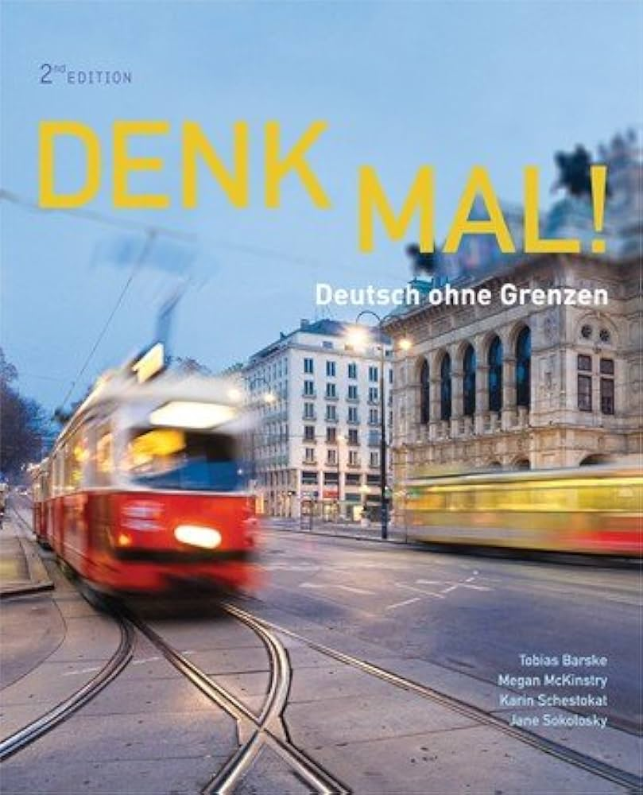
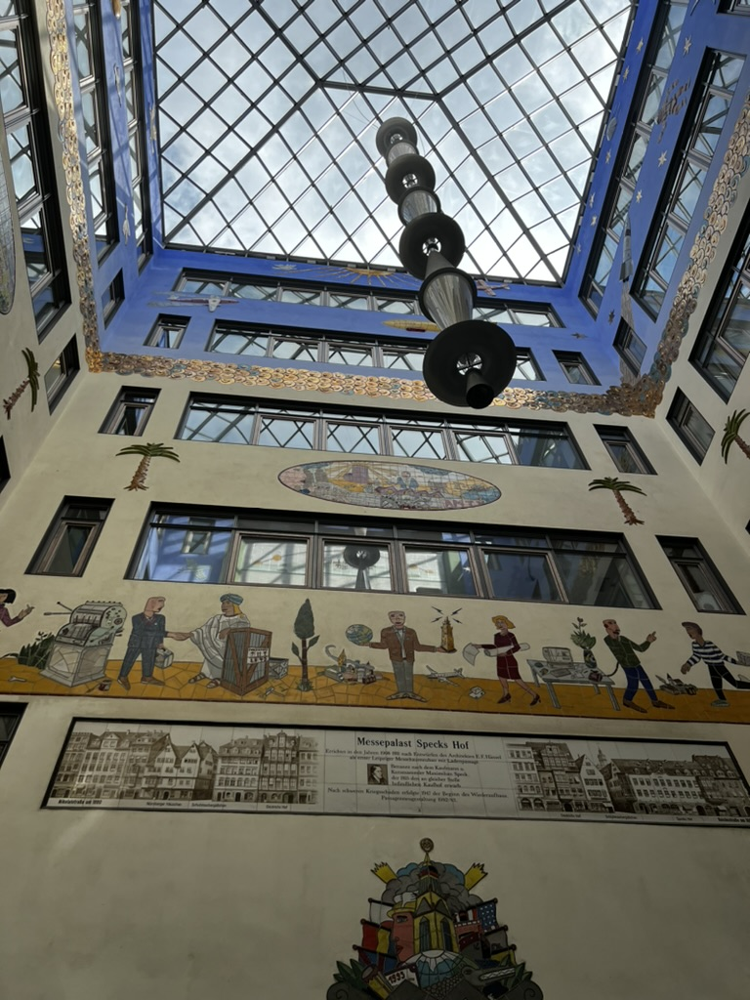
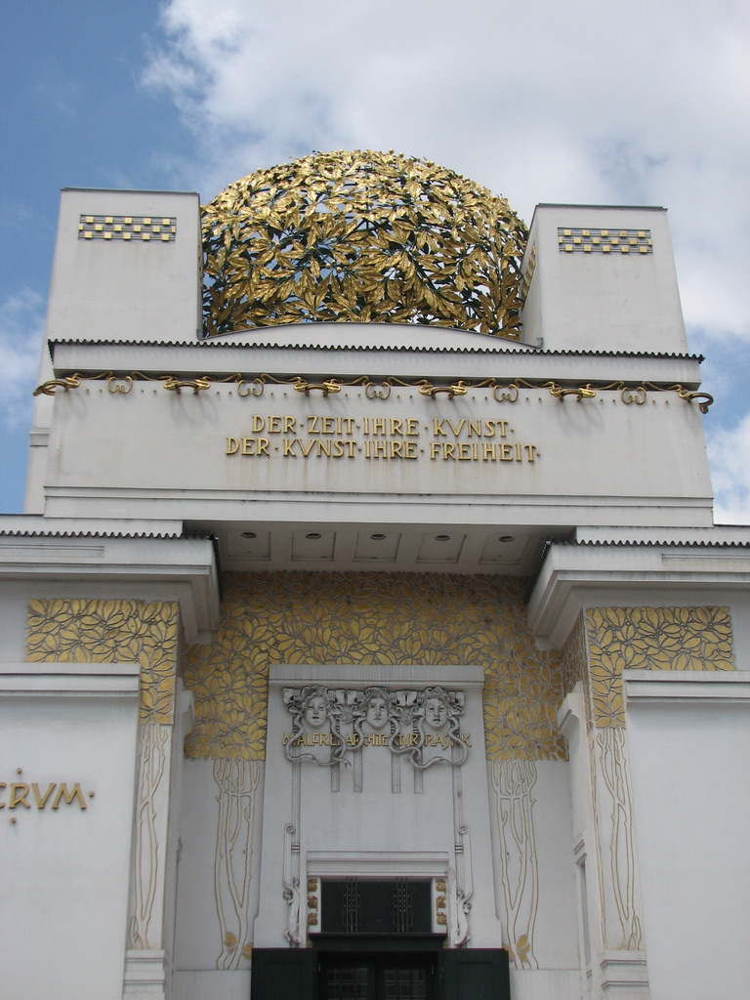
My research focuses on language pedagogy, the integration of language learning and intercultural competence, and the application of new technologies in language learning. I regularly present at conferences and have received Brown's Teaching with Technology Award and the Sheridan Award for Teaching and Learning. I am a co-author of the second-year German language textbook, Denk mal! (4th Edition, 2024).
One of my wildest memories is presenting at the ACTFL (American Association of Teachers of Foreign Languages) annual conference when iPods were first invented. The room was packed with over 200 participants who were curious about the pilot program at Brown where we were given 10 free songs on these small devices to use in our language courses. It's been an amazing ride as we see language technology evolve over time to include large language models, voice recognition and AI.
Meine Forschung konzentriert sich auf Sprachdidaktik, die Verbindung von Sprachenlernen und interkultureller Kompetenz sowie den Einsatz neuer Technologien im Sprachunterricht. Ich halte regelmäßig Vorträge auf Fachkonferenzen und wurde mit dem Teaching with Technology Award und dem Sheridan Award for Teaching and Learning der Brown University ausgezeichnet. Ich bin Mitautorin des Deutschlehrbuchs für das zweite Studienjahr, Denk mal! (4. Auflage, 2024).
Eine meiner verrücktesten Erinnerungen ist ein Vortrag auf der Jahreskonferenz der ACTFL (American Council on the Teaching of Foreign Languages), als es die ersten iPods gab. Der Raum war mit über 200 Teilnehmenden überfüllt, die neugierig auf das Pilotprogramm an der Brown University waren, bei dem wir auf diesen kleinen Geräten 10 kostenlose Songs für unsere Sprachkurse bekamen. Es war eine unglaubliche Reise, mitzuerleben, wie sich die Sprachtechnologie im Laufe der Zeit bis hin zu großen Sprachmodellen, Spracherkennung und KI weiterentwickelt hat.
Please reach out to me via email with any questions you may have about courses, study abroad, German grammar or to schedule a one-on-one meeting in person or via Zoom.
In my classes, students come prepared to engage in a lively class using the German vocabulary and grammar they have learned and practiced in their homework leading up to class. I have always used this flipped model in my language classes because I've found it gives students something in class that they don't have outside of class: speaking partners using German. We use a lot of pair work and graduate students and undergraduate students are very familiar with my phrase "Plus einen Satz". This is a reminder not to answer with just yes or no or by repeating the content of the question but to give an additional answer, a novel sentence to extend the conversation.
My students have graduated from Brown to pursue many careers as engineers, lawyers, advocates, architects and as German professors. Their curiosity about the world and their diligence and focus in learning a new language served them well!
Schreiben Sie mir gerne eine E-Mail, wenn Sie Fragen zu Kursen, zum Auslandsstudium oder zur deutschen Grammatik haben oder einen persönlichen Termin vor Ort oder per Zoom vereinbaren möchten.
In meinen Kursen kommen die Studierenden gut vorbereitet in den Unterricht und beteiligen sich lebhaft mit dem Wortschatz und der Grammatik, die sie zuvor in ihren Hausaufgaben gelernt und geübt haben. Ich setze dieses „Flipped Classroom"-Modell in meinen Sprachkursen schon immer ein, weil es den Studierenden im Unterricht etwas bietet, das sie außerhalb des Unterrichts nicht haben: Gesprächspartner, die Deutsch sprechen. Wir arbeiten viel in Partnerarbeit, und Doktoranden wie Studierende kennen meinen Spruch „Plus einen Satz" sehr gut. Er erinnert daran, nicht nur mit Ja oder Nein zu antworten oder den Inhalt der Frage zu wiederholen, sondern einen zusätzlichen, neuen Satz hinzuzufügen, um das Gespräch weiterzuführen.
Meine ehemaligen Studierenden haben nach ihrem Abschluss an der Brown University ganz unterschiedliche Berufswege eingeschlagen – als Ingenieurinnen und Ingenieure, Juristinnen und Juristen, Aktivistinnen und Aktivisten, Architektinnen und Architekten und als Germanistikprofessorinnen und -professoren. Ihre Neugier auf die Welt sowie ihr Fleiß und ihre Ausdauer beim Erlernen einer neuen Sprache haben ihnen dabei sehr geholfen!
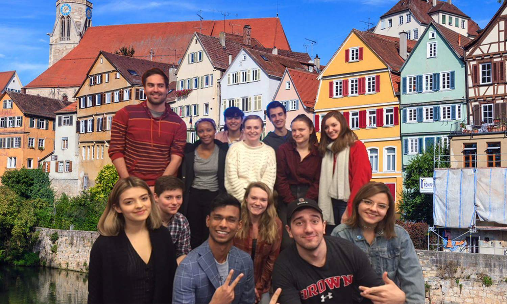
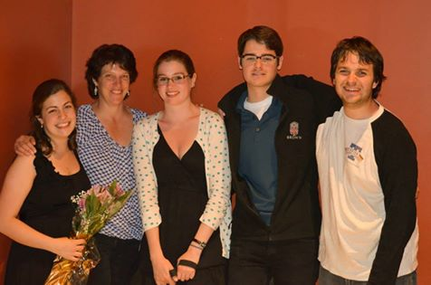
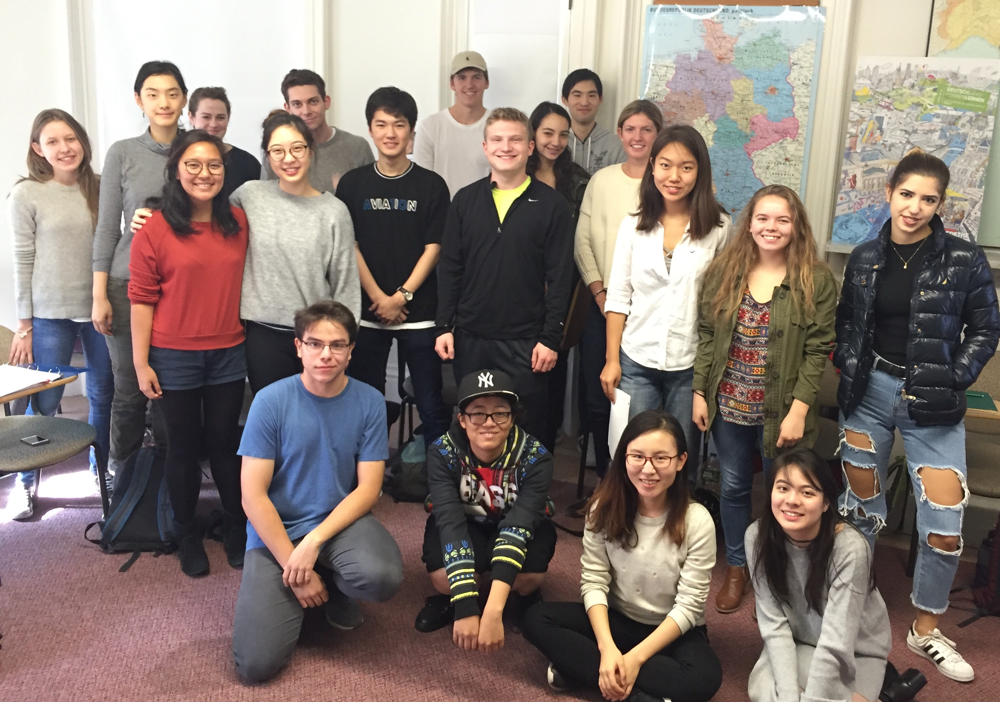
Germany
Deutschland
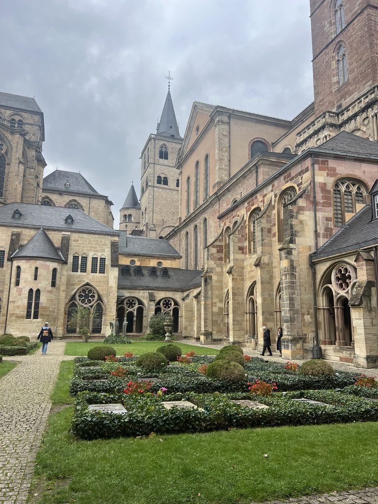
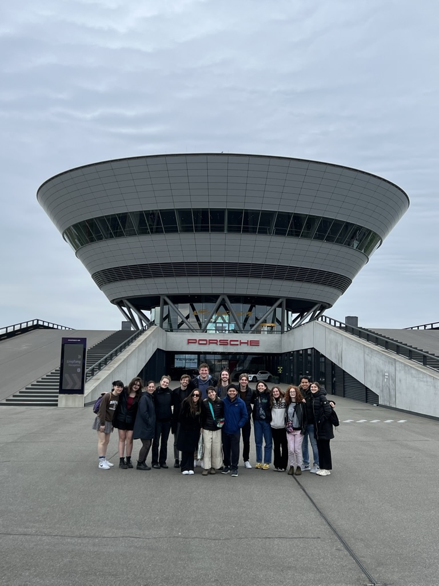
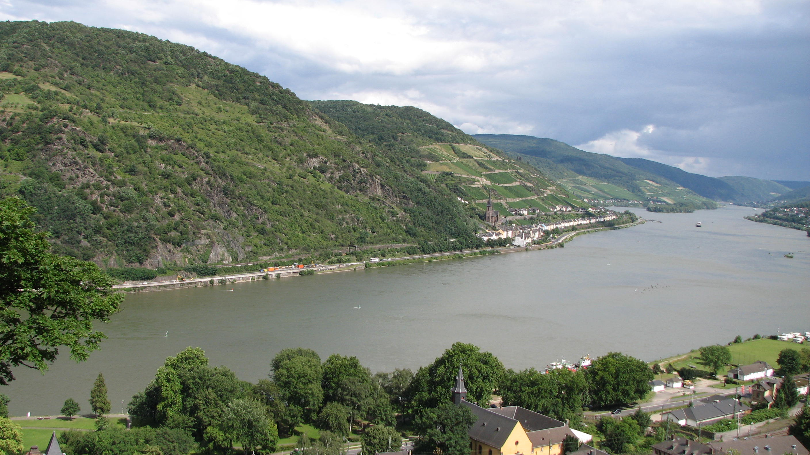
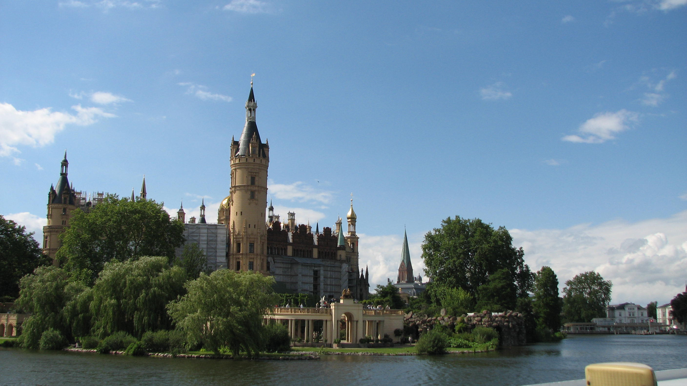
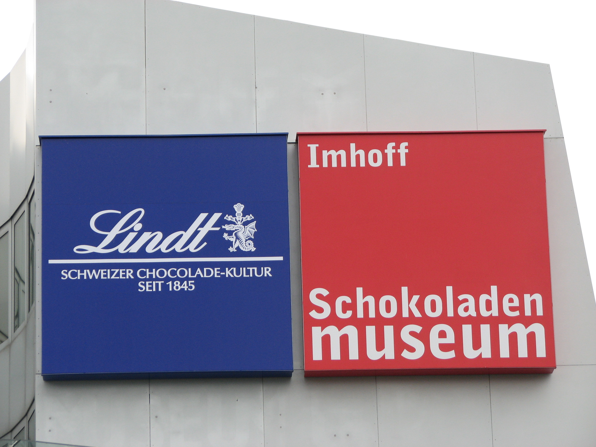
Berlin
Berlin is my favorite German city! The first time there was with a week funded by DAAD as part of my Hamburg junior year study abroad program with Smith College. Many years later, I returned shortly after the fall of the Berlin Wall to study at the Freie Universität. Nowadays, I return every year and always find a new bookstore or café or an interesting exhibit to expand on my knowledge of German culture and trends. I have also had the opportunity to travel to Berlin with undergraduate students. There's something very special about witnessing your students being amazed to see the Brandenburg Gate for the first time or working hard to speak only German in the subway and around town!
Berlin ist meine Lieblingsstadt in Deutschland! Zum ersten Mal war ich dort während einer vom DAAD finanzierten Woche im Rahmen meines Auslandsjahres in Hamburg mit dem Smith College. Viele Jahre später kehrte ich kurz nach dem Fall der Mauer zurück, um an der Freien Universität zu studieren. Heute fahre ich jedes Jahr nach Berlin und entdecke immer eine neue Buchhandlung, ein neues Café oder eine interessante Ausstellung, die mein Wissen über deutsche Kultur und aktuelle Trends erweitert. Ich hatte auch die Gelegenheit, mit Studierenden nach Berlin zu reisen. Es ist etwas ganz Besonderes zu erleben, wie die Studierenden zum ersten Mal staunend vor dem Brandenburger Tor stehen oder sich bemühen, in der U-Bahn und in der Stadt nur Deutsch zu sprechen!
Austria
Österreich
Austria was extremely important for my trajectory as a German professor. Right after college, I was awarded an Austrian Fulbright to teach at a teacher's college in the city of Linz, located on the Danube River and famous for music from the Brucknerhaus to Ars Electronica and Philip Glass. Vienna became an important source for my scholarship on fin-de-siècle Vienna and my dissertation on the writer and women's rights advocate Rosa Mayreder.
Österreich war für meinen Werdegang als Germanistikprofessorin äußerst wichtig. Direkt nach dem College erhielt ich ein Fulbright-Stipendium für Österreich, um an einer Pädagogischen Akademie in Linz zu unterrichten – einer Stadt an der Donau, die für ihre Musik bekannt ist, vom Brucknerhaus über die Ars Electronica bis zu Philip Glass. Wien wurde zu einer wichtigen Quelle für meine Forschung über das Wien des Fin de Siècle und für meine Dissertation über die Schriftstellerin und Frauenrechtlerin Rosa Mayreder.
Switzerland
Schweiz
In fourth semester German, students read Friedrich Dürrenmatt's crime novel Der Richter und sein Henker. They love the novel's presentation and discussion of the role that fate plays in our lives. Hopefully, students are also drawn to visit the Swiss city of Bern where the novel takes place.
Im vierten Semester lesen die Studierenden Friedrich Dürrenmatts Kriminalroman Der Richter und sein Henker. Sie lieben die Art, wie der Roman die Rolle des Schicksals in unserem Leben darstellt und zur Diskussion stellt. Hoffentlich bekommen die Studierenden dadurch auch Lust, die Schweizer Stadt Bern zu besuchen, in der der Roman spielt.
Wust
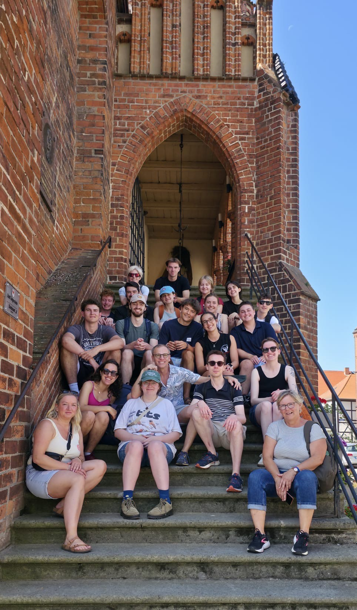
What's the Wust internship?
Was ist das Wust-Praktikum?
Ever since the fall of the Berlin Wall, the Sommerschule Wust for English Language, Literature, Theatre and Music has recruited highly energetic and enthusiastic Brown students as ESL instructors. In any given summer, you'll find anywhere from 4-10 Brown people teaching or visiting there. You'll work with a team of college students from the US and the UK to teach English through classroom instruction and a variety of workshops. You'll live in the charming village of Wust, about an hour west of Berlin, close to the River Elbe in former East Germany.
Applications are due at the beginning of February. Please email me with any questions or to express your interest.
Seit dem Fall der Berliner Mauer gewinnt die Sommerschule Wust für englische Sprache, Literatur, Theater und Musik besonders engagierte und begeisterte Brown-Studierende als Englischlehrkräfte. Jeden Sommer unterrichten oder besuchen dort zwischen 4 und 10 Leute von der Brown University. Sie arbeiten im Team mit Studierenden aus den USA und Großbritannien und vermitteln Englisch im Unterricht und in einer Vielzahl von Workshops. Sie wohnen im charmanten Dorf Wust, etwa eine Stunde westlich von Berlin, nahe der Elbe in der ehemaligen DDR.
Bewerbungsschluss ist Anfang Februar. Schreiben Sie mir gerne eine E-Mail, wenn Sie Fragen haben oder Interesse bekunden möchten.
Study Abroad
Studium im Ausland
Brown students have the opportunity to study abroad in either Berlin or in Freiburg (near the French border). Students must have completed beginning German in order to join either of these programs. Berlin is a cosmopolitan city with a rich history and lively social scene. Students study in Berlin on the IES Berlin program. Freiburg is a city known for its sustainability, its trees, and its prolific bike culture. Students live in dorms, take courses at the university or at the IES Freiburg center. Both options are excellent ways to expand your understanding of the world and to improve your German.
Brown-Studierende haben die Möglichkeit, entweder in Berlin oder in Freiburg (nahe der französischen Grenze) im Ausland zu studieren. Voraussetzung für beide Programme ist der Abschluss der Deutschkurse für Anfänger. Berlin ist eine weltoffene Stadt mit reicher Geschichte und lebendigem Nachtleben. In Berlin studieren die Studierenden im IES-Berlin-Programm. Freiburg ist bekannt für seine Nachhaltigkeit, seine vielen Bäume und seine ausgeprägte Fahrradkultur. Die Studierenden wohnen im Studentenwohnheim und besuchen Kurse an der Universität oder am IES-Zentrum Freiburg. Beide Programme sind hervorragende Möglichkeiten, die Welt besser zu verstehen und das eigene Deutsch zu verbessern.